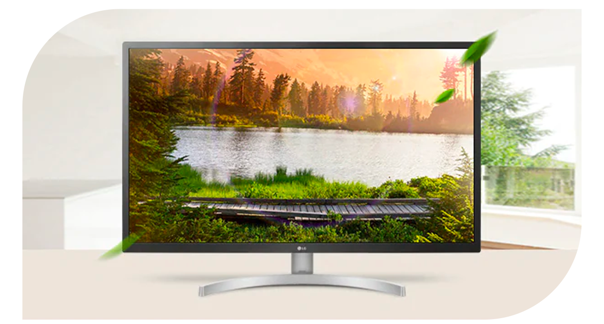

기능 3
눈에 편안한 기능
눈은 소중하니까요

* 리더모드 : 적용 전 화면 대비 블루라이트를 감소시켜 눈이 편안한 화면을 제공합니다.
* 플리커프리 : 눈에 피로를 주는 깜빡임 현상을 제거하여 어떤 밝기나 주파수에도 선명하고
안정적인 화면을 볼 수 있습니다
* 색약자색보정: 색상 수정 알고리즘을 적용하여 색약자를 위해 특정 색상범위를
인식할 수 있도록 화면 색을 변환하여 제공합니다
리더모드, 플리커프리, 색야자색보정 기능 등
사용자 눈에 편안한 기능을 제공해
장시간 모니터를 보아도 눈이 편안해요.